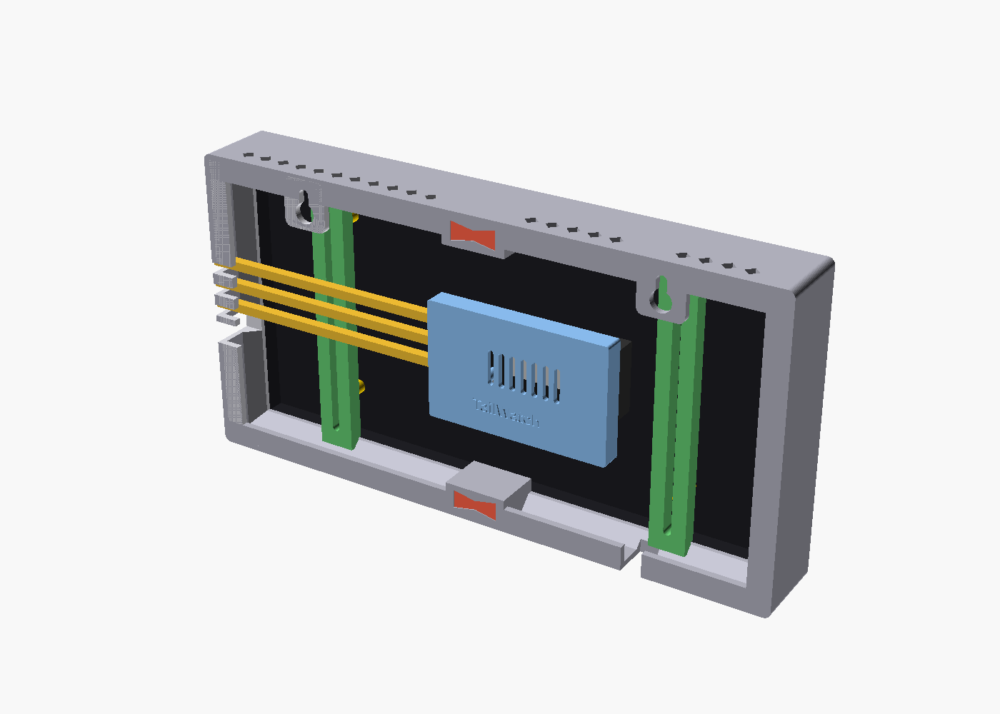
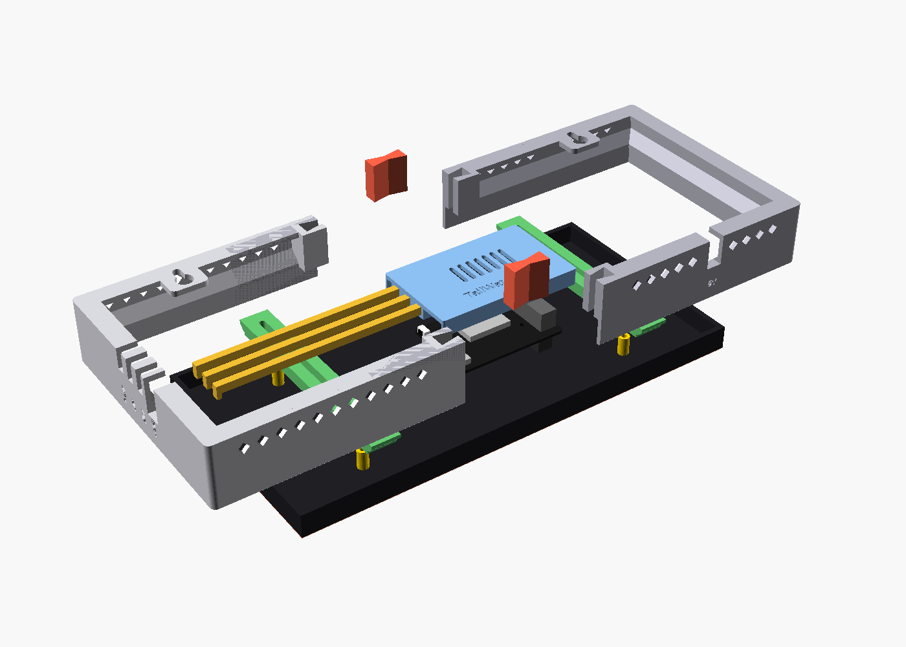
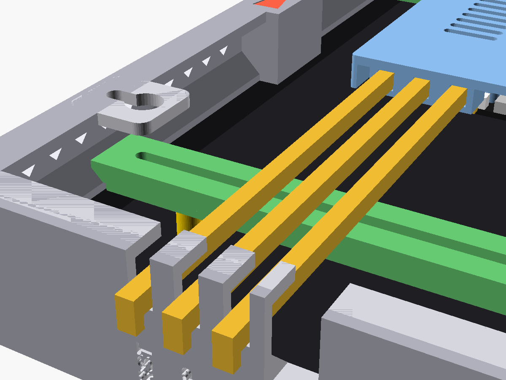

Controller
Adafruit MatrixPortal S3 — Wi-Fi, CircuitPython, drives the panel directly
Adafruit (official)
buy direct — no reliable Amazon.com listing found for the genuine board; avoid AliExpress clones for this one
Open source · on-device · no subscription
TailWatch is a small LED wall panel that shows exactly one aircraft near your home at a time — flight number, airline, route, altitude, speed — quietly updating as planes pass overhead. No app, no account, no cloud service in the loop.
Set your latitude/longitude and a search radius once, from a small settings page it hosts itself.
The device polls public aircraft-tracking data directly — no middleman server, nothing routed through us.
It picks the closest aircraft and holds it steady on screen, switching only when a new one is clearly closer — not flickering between planes.
Runs entirely on the hardware itself. No cloud API, no account, nothing to subscribe to or that can be shut down remotely.
Brightness follows a day/night schedule — fixed hours or real local sunset — and can go fully dark on a sleep schedule.
Hide helicopters, small general-aviation traffic, or military aircraft, independently.
A small bundled set of carrier badges and colors, generated locally — no scraped logos, no network fetch.
If Wi-Fi drops, it reconnects automatically. If it moves to a new network, it reopens its own setup hotspot — no factory reset.
There's a hidden animation if you know where to look. We're not telling.
Four off-the-shelf parts — nothing custom to fabricate, no soldering required.
Adafruit MatrixPortal S3 — Wi-Fi, CircuitPython, drives the panel directly
128×64, true P2 pitch (2.0mm), 256×128mm, HUB75, 1/32 scan — not the more common P2.5 (320×160mm), which is a different physical size
5V 4A (20W), 5.5×2.1mm barrel plug, UL listed — panel draws ~3A at full white, budget headroom for margin
Female 5.5×2.1mm barrel jack to 2-pin screw terminal — mates the power brick to the panel's bare 5V/GND leads
Bare-wire-to-USB-C pigtail, 5V — splice onto the same power brick as the panel to power the MatrixPortal S3 too, instead of a second USB-C charger. See the wiring gotcha below first.
Powering both from one supply, the right way: the board still has to be fed through its USB-C port — that part doesn't change — it just doesn't need its own wall charger. Splice the power brick's leads onto a small junction, run one branch straight to the panel's power input as above, and run the other through a bare-wire-to-USB-C pigtail cable (see Hardware above) into the MatrixPortal's USB-C port. One brick, two independent power inputs, no back-feeding.
Links are for reference, not endorsements or affiliate links (we don't have any) — verify specs before buying, prices and listings change.
Designed from the real controller and panel dimensions — six parts, no supports needed, every part fits a 200×200mm print bed.
Drag to rotate · scroll or pinch to zoom



OpenSCAD source, ready-to-slice STLs, a Blender file, and STEP files for other CAD tools are all in the repo.
Firmware, design notes, and setup docs are all on GitHub. Build your own.
github.com/erikpt/open-adsb-wall